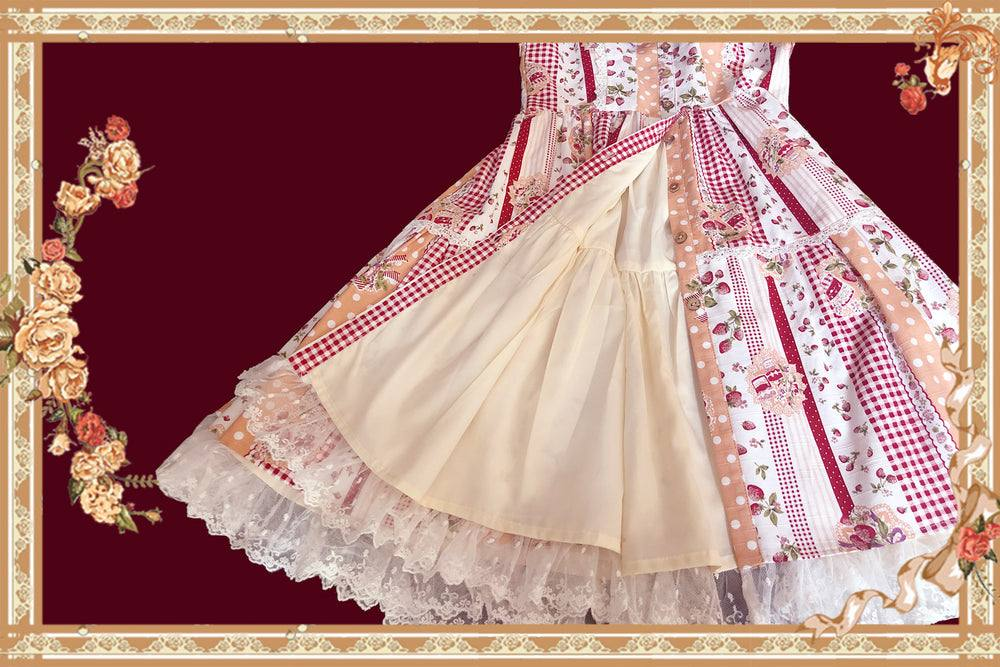

零售页评价／批次与独立性未核
一位自述胸围接近表上限、肩窄的作者肯定棉和蕾丝，但感觉腰线比照片高；原想要的配色尺码曾缺货而改选。该订单条件不代表当前所有组合库存。
查看对应来源 ↗草莓拼格中文对应已有图片对照；粉/浅蓝JSK，原店现行批次未核
中文对应已补 · 原店批次待核
补核10月28日已存零售规格：S / light blue，USD 48.99；商家尺码表S–XXL裙长排除底部5厘米蕾丝，手量误差2–3厘米；后背可伸6厘米的正文不直接加到人体净围或表中。 原店批次、实付及独立实穿缺口保留。 补掀裙里侧照片，确认图片可见内层，未猜测里料纤维。
“有记录”表示取得对应资料，不等于原店现行批次或实物已全部确认；日期：2026-10-30。
| 核查项 | 状态 | 结果与适用范围 |
|---|---|---|
| 款式与版本 | 部分有据 | 草莓拼格图片支持中文对应；已排除不同的小田园格子草莓。T09 ↗ |
| 商品与店铺入口 | 部分有据 | 品牌自述店铺已补，草莓拼格商品ID与当前团次缺证据。O08 ↗ |
| 价格与包含物 | 部分有据 | 海外浅蓝/S 48.99美元只含JSK；聚合当前暂无报价。R06 ↗ T09 ↗ |
| 面料与里料 | 部分有据 | 补零售掀裙照片，可见浅色内层；棉/蕾丝是商家陈述，里料纤维、比例与原店洗标仍未核。R06 ↗ T09 ↗ |
| 厘米尺码 | 部分有据 | 零售S–XXL裙长排除5厘米底蕾丝；聚合88厘米边界未写，未强行统一。R06 ↗ T09 ↗ |
| 销售与交期 | 部分有据 | 海外5–7天与通用7–10天是处理期文案；当前原店库存未知。R06 ↗ |
| 穿着反馈 | 部分有据 | 两条海外评价含赠奖和历史改色条件；没有搬用另一款旧衣反馈。R06 ↗ |
对应资料 · T09 ↗ 核读：2026-10-25
第三方具名图片支持中文名称对应；原店当前标题、SKU和洗标未读到。
对应资料 · R06 ↗ 核读：2026-10-30
复用10月28日已保存公开HTML及product.js，本日没有再次请求零售页。字段属于该零售渠道和旧观察日，不作为今天原店SKU、实付、库存数量或同批次确认。
| 完整选项 | USD展示价 | 零售SKU | variant ID | available |
|---|---|---|---|---|
| S / light blue | 48.99 | LOT105306 | 41456229122222 | true |
未进行加入购物车、结算或订单验证；美元报价不折算为淘宝人民币价，available不保证当前仍可购买。
对应资料 · R06 ↗ 核读：2026-10-30
10月28日已下载、10月30日逐图核读的零售图库照片；不是原店当前实物验收或洗标。

42Lolita · Strawberry Plaid ↗
零售页品牌标注：Infanta · 读取日期：2026-10-28
本条以公开零售页为采样入口，尚未核原店当前商品ID、授权关系和洗标。图鉴与用户自述分别保留；零售规格不等于原店同批次确认，美元报价不折算为淘宝价。
直接采样零售页Strawberry Plaid JSK；婴梵塔Infanta双语品牌关系有其他图鉴入口支持，本款中文正式名与原店批次仍待核。
材质陈述：零售页写Cotton、lace（棉与蕾丝），未给成分比例、里料或原店洗标。
包含物与分售：此报价仅JSK。内搭、延长衬裙/裙撑、胸针另配；搭配图不是整套包含物。
| 尺码 | 名义胸围 | 名义腰围 | 裙长（不含底部蕾丝） |
|---|---|---|---|
| S | 84 | 70 | 88 |
| M | 88 | 74 | 90 |
| L | 92 | 78 | 92 |
| XL | 96 | 82 | 94 |
| XXL | 100 | 86 | 96 |
单位厘米；裙长明确不含底部5厘米蕾丝，平铺测量可能有2–3厘米误差。页面另写后背可伸约6厘米，未直接加到表内胸围或当作人体尺寸建议。
S / light blue：USD 48.99；零售SKU LOT105306。
描述处理5–7天，通用现货说明7–10天；未确认优先级，不作原店库存/送达承诺。
该报价仅属于上述海外零售页和所选组合，未核结算运费、税费与实付；不折算成淘宝价，也不替代下方原店交期。
未取得原店选定SKU人民币价格；海外报价仅见独立零售页记录，未核运费、税费和结算实付。
尚无与此研究目标对应的官方SKU报价。
一位自述胸围接近表上限、肩窄的作者肯定棉和蕾丝，但感觉腰线比照片高；原想要的配色尺码曾缺货而改选。该订单条件不代表当前所有组合库存。
查看对应来源 ↗另一条正面评价明确说通过店铺抽奖获得裙子，不能计为自费购买体验。两条所见评价不足以代表总体满意度。
查看对应来源 ↗正文与可见评论已读；未观看的视频不写成视频结论。版本、配色、体型、渠道和推广关系未全部统一。
按当前材料保留缺口；“未找到”不表示信息或款式不存在，取得新资料后再更新。
统一是否含底部蕾丝的裙长口径，并保留胸围接近上限、肩宽与腰线位置条件；单裙价格和完整搭配成本分开。
这是后续验证问题，不代表已确定的产品定位、定价或质量结论。